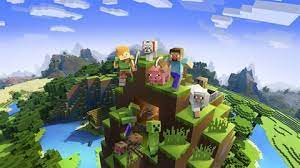

Minecraft er et populært videospill som ble utviklet og skapt av Markus Persson,
også kjent som "Notch". Spillet ble først utgitt av Mojang Studios i 2009. Det har
vokst enormt i popularitet og har blitt et av de mest ikoniske spillene i moderne
tid.
Minecraft har mange forskjelige fungsjoner men noen av de populæreste er...
trykk på bildet for mer info om minecraft
er tillegg laget av spillere eller utviklere som endrer eller legger til nye
funksjoner i Minecraft. Disse modifikasjonene kan variere fra små
endringer i spillmekanikk til store overhalinger av spillet.